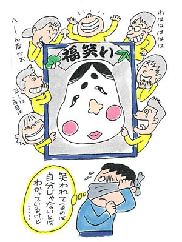

社会恐怖6
森田療法で対人恐怖を乗り越えて
（対人恐怖、視線恐怖）
西岡 文雄（仮名）22歳・学生（体験フォーラム会員）
対人恐怖から日々の学校生活が楽しくなくなる
自分は対人恐怖症になったのは中2の頃でした。友達に冗談で周りから嫌われているという事を言われて、それを真に受けてしまい、周りの人をとても意識するようになってしまいました。
それと同時に友達に嫌われてないかとても不安に過ごすようになり、次第に自分に接してきてくれている友達への信頼がどんどんなくなっていき、人間不信になってしまいました。
そうしていく内に学校で今まで楽しかったものが楽しくなくなってしまい、学校での楽しみというものが全くもって無くなってしまい、どんどん休みがちになってしまい、高2からは完全に不登校になりました。
その後、周りからの励ましやら、なんやらあり何とか卒業できましたが、今思えばあの頃は鬱状態だったと思うので、いっそう学校をやめてしまって暫く休養していた方が良かったと思います。（私の感覚です）
辛い時に無理して行っていたので、ニヤケや、心苦しさ、周りの人からの視線に対しての恐怖がより一層強まってしまい、逆効果だったと思います。
浪人生活、森田療法との出会い

だから、そのまま浪人もしたのですが1年目は人間関係に悩んでしまって、予備校に入ったものの殆ど行けず、勉強にも集中出来なくて、自分の人生の1年分を棒に振ってしまいました。
そして、森田療法というものを知ったのは浪人2年目でした。浪人2年目も最初の頃、人間関係に悩み辛くて、ネットサーフィンしていたら森田療法というものがあって、色々見て実践してました。
ここのサイトに始めは電話で助けを求めようとしたのですが、先生方がいらっしゃる時間帯は、自分は予備校に行ってる時間帯だったので、結局お話しすることはできませんでした。
そんな中ここの掲示板の存在を教えてもらい、早速登録しました。
自分の悩みというものを家族にすら言えない状況だったので、とても助かりました。自分の悩みを打ち明けれる場所はここにしかなかったので、存分にぶつけさせて頂きました。
そしてそのたびに森田療法に基づいて色んなアドバイスを頂き、それが自分にとって励ましにもなり、何とか浪人2年目で市立大学に入る事ができました。 とても感謝しています。
体験フォーラムを利用しながらの大学生活
そして大学1年目、自分の状態はとても山有り谷有りでした。落ち込む時はとことん落ち込むし、気分が良いときはとことん楽しめるしみたいな感じでした。 ここでもドン底の時はここの掲示板に助けを求め、沢山のアドバイスを頂き、1年目を乗りきる事ができました。
森田療法で一番効果があったと思うのは、恐怖突入と、行動に目を向けるということです。
でも、自分の場合、とても意識し過ぎてしまう癖みたいなのがあって、出来ていなかったりすると、自分に対しての自信を失ってしまってました。完璧主義だったので。でも普通最初は出来なくて当たり前なんですよね。
失敗から色々学んで少しずつ成長していけばいいと思います。
不安に対しての付き合い方を身につける
森田療法の事とは話が逸れるのですが、自分の場合は対人恐怖症なのですが、外に出る前に必ずと言っていいほど何かしら不安があります。しかし人間が抱く不安というものの99%は実現しないものらしいです。
実際自分は外に出る前に出た不安が的中すると言うことは殆どありません。 これを実感できたら凄く楽になります。そのためにも恐怖突入をたまにしていただければと思います。
最初のうちは色々実際に出た不安と、それに対して実際行動してみてどうだったかという結果をノートに1日やることを終えてから、書いてみて欲しいです。 そしたら次第に分かっていき、実際に不安がでてもそれは実現しないものとして、不安自体気にならなくなります。
自分はノートには書いたりはしなかったのですが、1日終えて家に帰ってから、あの不安通りに全くならなかった！と実感していました。これを何回か繰り返す内に不安に対してどうでもよくなっていきました。
でも恐怖突入というものは自分の体調を考慮してやって頂きたいです。
毎日心苦しいと感じている人は、まず休養をしっかりとり(しっかりと寝て)、規則正しい生活をして、少しずつ体力を付けていく事が優先だと思います。 早寝早起きする事が一番良いんじゃないかなと思います。
朝早く起きて、まず外の光を浴びて、顔を洗い、朝御飯を食べて、歯磨きをする、これするととてもスッキリした気分になります。そしてそれが終わってもまだ時間が余ってる日があればラッキーと思えます！そして、自分の場合、将来留学したいと思ってるので、英語の単語帳を見たり、自分の好きな事を出来ています。
家にいても出来る事は沢山あります。掃除、洗濯、食器洗い、ゴミ出し、などなど。自分も一人暮らしを始めて、家事だけでも結構体力を使う事を実感しています。
今自分がしたいと思ってる事や目標があれば、それに自分の全てを注いだらいいと思います。それをするための時間は誰でも沢山あると思ってます。自分はネットサーフィンしてる時間、テレビを見ている時間が今までとても多かったのですが、今はその時間を完全に自分の趣味に振り当ててます。そしたらメチャメチャ沢山の時間がありました。
あと目標がまだ見つかってない人とかは、今自分がしていること、出来ることを極めれば良いと思います。そうしている内に自然と意欲が湧いてくると思います。
対人恐怖症から学んだこと
あと自分は対人恐怖症で皆から嫌われたくない、好かれたいと思っていたのですが、それは到底無理な話だと理解出来ました。皆から嫌われたくない、好かれたいと思っていたら、周りの人達に振り回され自我を失い、それこそ一生自分の目標などが見つからず、とてもつまらない人生になってしまうと思います。
そうではなく、今していること、自分の目標に全力で取り組んでください！そしたら自分の意外な才能に気付けたり、それに対して周りが協力してくれたり、逆に周りが困っていたら助けてあげたりすることが出来ます。この際人のことよりも、自分の仕事がしっかりと出来ていれば、自分が満足出来ていればそれで良いです。
こっちの方が楽ですし、自分にとって楽しいですし、その仕事やらも今まで以上に出来がよく、効率も良いですし、でも行動する前って、とても憂鬱ですし、ダルいですよね。自分も今もそうです、てか皆そうだと思います。
そうじゃなかったらすいません。
自分は今も、バイトに行く前とてもダルい気持ちですし、大学で実験や製図をする前ってとてもダルい気持ちです。しかし取り組むってなると、それに対してほぼ100%気持ちを切り替えて全力で取り組みます。時々休憩もしつつ、そしたらダルいって思ってた気持ちが次第に楽しいに変わっていったりするんですよね。 そして終わった頃には、今日もやりきったぞ！っていう爽快感と意外に楽しかったっていう思いに変わっていて、その日もぐっすりと眠れます。
そして行動していると自然と仲間意識が出来ます。そして気付いたら信頼し合える人が出来ています。自分は大学1年と2年で大きく周りの仲間というものが変わったと思います。でもそれはそれで今はとても充実して過ごせているので幸せです。
サラリーマンの人なら仕事に、主婦さんなら料理や家事に！出来ることなら何でもいいので、1つでいいので全力で取り組んで頂ければと思います。
日記を活用すること
あと1日の日記をつけるのもとても良かったと思います。
朝起きたときの気分を10段階評価、夜寝た時間、朝起きたときの時間、何時間寝たか、1日の内で悪かったことを3つ、1日の内で良かった事を3つ、5分もあれば書けます。これで1日の内で悪かったことがもし3つなければ1つ2つもしくは0個で大丈夫です。でも必ず良かった事はしっかりと3つ書いて欲しいです。そして箇条書きでいいです。
自分の場合、良かった事として、良く寝れた、友達と楽しく話せた、バイト頑張った、好きな事ができた、等です。悪いこととしては、バイトで怒られた、夜更かししたなど。簡単でいいです！被ってもいいです。その日自分が感じたことをありのまま書いて頂ければいいと思います。
この掲示板がなかったら今も自分は自分一人で悩みを抱えてしまっていたと思います。皆さんにもとことん自分の悩みを綴って貰いたいと思います。悩み悩んでしまうけど、一人で抱え込んでしまうよりかは負担が軽減します。ここの掲示板にはとても助けられました。感謝してもしきれないほどです。ありがとうございました。そしてお世話になりました。